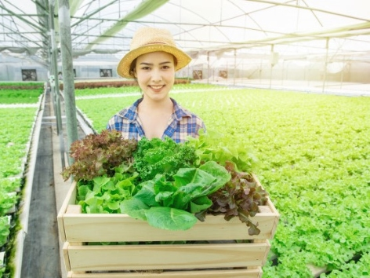

ARTIKEL
Teknologi Pertanian Modern Meningkatkan Minat Generasi Muda di Bidang Pertanian

Gelar Teknologi Pertanian Modern dalam rangka Peringatan Satu Tahun Kinerja Kementerian Pertanian di bawah Kabinet Kerja Pemerintahan Jokowi-JK telah dilaksanakan pada hari Selasa 20 Oktober 2015 di desa Gardu Mukti, kecamatan Tambakdahan, kabupaten Subang Jawa Barat dengan Tema Modernisasi Pertanian untuk Swasembada Pangan. Acara Gelar Teknologi, dibuka oleh Menteri Pertanian (Dr. Andi Amran Sulaiman), dan dihadiri oleh Kepala Staf Angkatan Darat (KSAD) Jendral TNI Mulyono, Gubernur Jawa Barat, Pangdam Siliwangi, Bupati Subang, para pejabat Eselon I Kementerian Pertanian (Sekjen, Irjen, Dirjen TP, Dirjen PSP, Dirjen Hortikultura, Kepala Badan Ketahanan Pangan, Kepala Badan PPSDMP, Kepala Badan Karantina, Dirut Perum Bulog, Staf Ahli Menteri), para Pejabat Eselon II Kementerian Pertanian, Ketua KTNA, Bupati beberapa daerah Tk II, Kepala Dinas Pertanian Provinsi, Kepala Dinas Pertanian Kabupaten, Kepala BPTP, Kepala Balai Penelitian dan undangan lainnya dengan jumlah keseluruhan yang hadir sekitar 5.000 orang. Dalam arahannya, Menteri Pertanian menyampaikan bahwa modernisasi pertanian melalui mekanisasi merupakan solusi yang efisien untuk menggantikan pola usahatani manual dan mengatasi keterbatasan jumlah tenaga kerja. Diharapkan minat generasi muda di bidang pertanian meningkat seiring dengan ketersediaan dan pemanfaatan alat dan mesin pertanian (alsintan). Mekanisasi ini sudah lama dilakukan, namun dalam jumlah terbatas. Pada tahun 2014 pemerintah hanya mampu menyediakan alsintan kurang dari 10 ribu unit. Mulai tahun 2015 dilakukan mekanisasi besar-besaran dengan penyediaan alsintan lebih dari 60 ribu unit sekaligus mulai bangkitnya modernisasi pertanian. Alsintan tersebut meliputi rice transplanter, combine harvester, dryer, power thresher, corn sheller, rice milling unit (RMU), traktor dan pompa air. Adanya mekanisasi semua kegiatan pertanian dapat dikerjakan lebih ringan, praktis dibanding pola manual. Di sinilah daya tarik teknologi pertanian modern bagi generasi muda. Pada acara tersebut Menteri Pertanian melakukan demonstrasi alsintan combine harvester, rice transplanter, traktor roda-2 dan traktor roda-4 bersama-sama KSAD, Gubernur Jabar, Mahasiswa dan Petani Muda. Semua alat yang digunakan untuk demonstrasi langsung diserahkan kepada kelompok tani setempat.